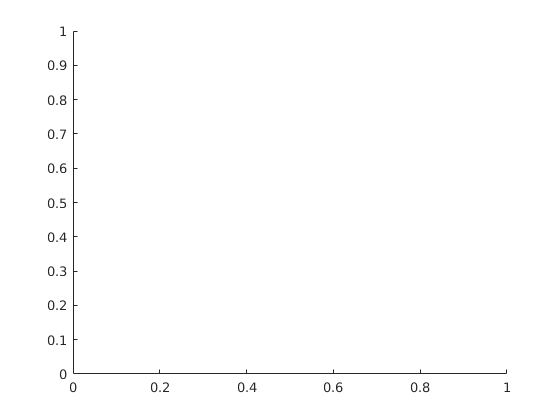

function hold(varargin)
narginchk(0,2);
[ax,args,nargs] = axescheck(varargin{:});
if isempty(ax)
ax = gca;
end
matlab.graphics.internal.markFigure(ax);
fig = get(ax,'Parent');
if ~strcmp(get(fig,'Type'),'figure')
fig = ancestor(fig,'figure');
end
if ~isempty(args)
opt_hold_state = args{1};
end
nexta = get(ax,'NextPlot');
nextf = get(fig,'NextPlot');
hold_state = strcmp(nexta,'add') && strcmp(nextf,'add');
replace_state = 'replace';
if isa(ax,'matlab.ui.control.UIAxes')
replace_state = 'replacechildren';
end
if(nargs == 0)
if(hold_state)
set(ax,'NextPlot',replace_state);
disp(getString(message('MATLAB:hold:CurrentPlotReleased')));
else
set(fig,'NextPlot','add');
set(ax,'NextPlot', 'add');
disp(getString(message('MATLAB:hold:CurrentPlotHeld')));
end
elseif(strcmp(opt_hold_state, 'on'))
set(fig,'NextPlot','add');
set(ax,'NextPlot','add');
elseif(strcmp(opt_hold_state, 'off'))
set(ax,'NextPlot', replace_state);
elseif(strcmp(opt_hold_state, 'all'))
set(fig,'NextPlot','add');
set(ax,'NextPlot','add');
else
error(message('MATLAB:hold:UnknownOption'));
end
Current plot held
